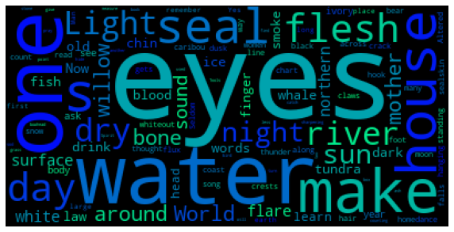

Information for this page taken pretty much wholesale from poets.org page
dg nanouk okpik is a poet from Alaska who is of Iniut and Inupiaq heritage. She has published two books of poetry (more on that later), and is currently a Lannan Fellow at the Institute of American Indian Arts in Santa Fe. Here is a map with important locations in dg nanouk okpik's life:
dg nanouk okpik has published two complete volumes of poetry, Corpse Whale in 2012 and Blood Snow in 2022. She won an American Book Award for Corpse Whale in 2012, and in 2022 was awarded the May Sarton Award for Poetry from the American Academy of Arts & Sciences. In addition to these collected volumes, okpik has published other works as parts of larger poetry collections. William and Mary libraries provides access to Corpse Whale as well as many of the poems which appear in other volumes
The poems in Corpse Whale are organized by the months of the year in Inuktitut. The poem Iivaqsaat is part of the Nuliavik Tatqiq (October) chapter. An excerpt from the poem is provided here:
Iivaqsaat excerptThis is a wordcloud made from the full poem...perhaps it gives you some idea what it is about.
